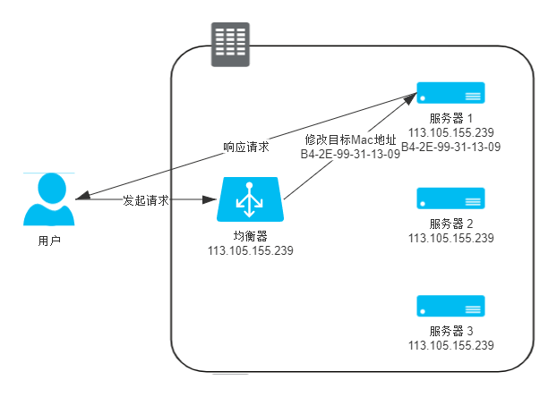
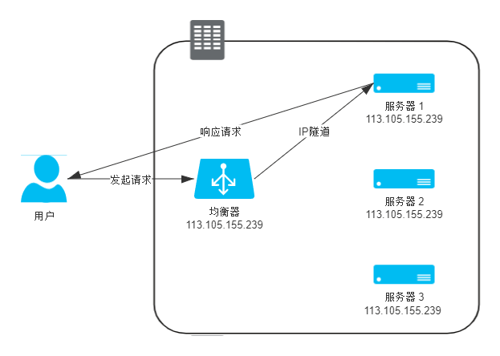
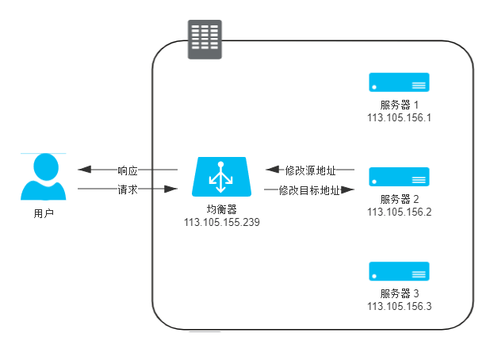
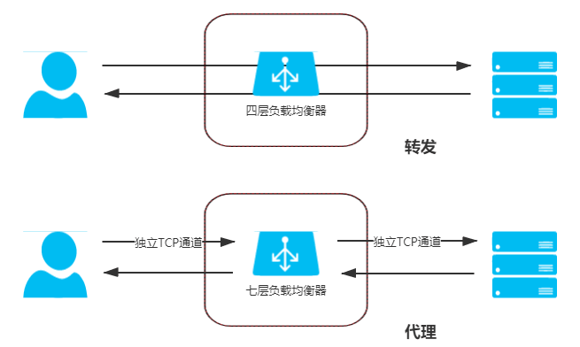

本文只讨论请求进入数据中心后的负载均衡方案，DNS 负载均衡不在讨论范围内。
负载均衡（Load Balancing）定义：调度后方的多台机器，以统一的接口对外提供服务，承担此职责的技术组件。
总体来说负载均衡只有两种：
- 四层负载均衡
- 七层负载均衡
四层负载均衡的优势是性能高，七层负载均衡的优势是功能强。
“四层”的来历：“四层负载均衡”其实是多种均衡器工作模式的统称，“四层”的意思是说这些工作模式的共同特点是维持着同一个 TCP 连接，而不是说它只工作在第四层，如：
- 通过改写 MAC 实现的负载均衡（又叫数据链路层负载）工作在二层
- 通过改写 IP 实现的负载均衡（又叫网络层负载均衡）工作在三层
出于习惯和方便，现在几乎所有的资料都把它们统称为四层负载均衡。
如果在某些资料上看见“二层负载均衡”、“三层负载均衡”的表述，描述就是它们工作的层次。
对于一些大的网站，一般会采用 DNS+四层负载+七层负载的方式进行多层次负载均衡。
四层负载均衡
数据链路层负载均衡
数据链路层负载均衡所做的工作，是修改请求的数据帧中的 MAC 目标地址，让用户原本是发送给负载均衡器的请求的数据帧，被二层交换机根据新的 MAC 目标地址转发到服务器集群中对应的服务器的网卡上，这样真实服务器就获得了一个原本目标并不是发送给它的数据帧。
负载均衡服务器和集群内的真实服务器配置相同的虚拟 IP 地址（Virtual IP Address，VIP），也就是说，在网络通信的 IP 层面，负载均衡服务器变更 MAC 地址的操作是透明的，不影响 TCP/IP 的通信连接。所以真实的搜索服务器处理完搜索请求，发送应答响应的时候，就会直接发送回请求的客户端，不会再经过负载均衡服务器，避免负载均衡器网卡带宽成为瓶颈，因此数据链路层的负载均衡效率是相当高的。

只有请求经过负载均衡器，而服务的响应无须从负载均衡器原路返回的工作模式，整个请求、转发、响应的链路形成一个“三角关系”，所以这种负载均衡模式也常被很形象地称为 “三角传输模式”（Direct Server Return，DSR），也有叫“单臂模式”（Single Legged Mode）或者“直接路由”（Direct Routing）。
二层负载均衡器直接改写目标 MAC 地址的工作原理决定了它与真实的服务器的通信必须是二层可达的，通俗地说就是必须位于同一个子网当中，无法跨 VLAN。
数据链路层负载均衡最适合用来做数据中心的第一级均衡设备，用来连接其他的下级负载均衡器。
网络层负载均衡
我们可以沿用与二层改写 MAC 地址相似的思路，通过改变数据包里面的 IP 地址来实现数据包的转发。
有两种常见的修改方式。
IP 隧道
保持原来的数据包不变，新创建一个数据包，把原来数据包的 Headers 和 Payload 整体作为另一个新的数据包的 Payload，在这个新数据包的 Headers 中写入真实服务器的 IP 作为目标地址，然后把它发送出去。
设计者给这种“套娃式”的传输起名叫做“IP 隧道”（IP Tunnel）传输。
IP 隧道的转发模式仍然具备三角传输的特性，即负载均衡器转发来的请求，可以由真实服务器去直接应答，无须在经过均衡器原路返回。
IP 隧道工作在网络层，所以可以跨越 VLAN，因此摆脱了直接路由模式中网络侧的约束。

IP 隧道的缺点：
- 要求真实服务器必须支持“IP 隧道协议)”（IP Encapsulation），就是它得学会自己拆包扔掉一层 Headers（现在几乎所有的 Linux 系统都支持 IP 隧道协议）。
- 这种模式仍必须通过专门的配置，必须保证所有的真实服务器与均衡器有着相同的虚拟 IP 地址，因为回复该数据包时，需要使用这个虚拟 IP 作为响应数据包的源地址，这样客户端收到这个数据包时才能正确解析。
NAT
NAT（Network Address Translation） 模式通过改变目标数据包：直接把数据包 Headers 中的目标地址改掉，修改后原本由用户发给均衡器的数据包，也会被三层交换机转发送到真实服务器的网卡上。
NAT 模式需要让应答流量先回到负载均衡，由负载均衡把应答包的源 IP 改回自己的 IP，再发给客户端，这样才能保证客户端与真实服务器之间的正常通信。在流量压力比较大的时候，NAT 模式的负载均衡会带来较大的性能损失，比起直接路由和 IP 隧道模式，甚至会出现数量级上的下降，此时整个系统的瓶颈很容易就出现在负载均衡器上。

七层负载均衡
应用层负载均衡
工作在四层之后的负载均衡模式就无法再进行转发了，只能进行代理，此时真实服务器、负载均衡器、客户端三者之间由两条独立的 TCP 通道来维持通信。

我们先对代理做个简单介绍，根据“哪一方能感知到”的原则，可以分为“正向代理”、“反向代理”和“透明代理”三类。
- 正向代理就是我们通常简称的代理，指在客户端设置的、代表客户端与服务器通信的代理服务，它是客户端可知，而对服务器透明的。
- 反向代理是指在设置在服务器这一侧，代表真实服务器来与客户端通信的代理服务，此时它对客户端来说是透明的。
- 透明代理是指对双方都透明的，配置在网络中间设备上的代理服务，譬如，架设在路由器上的透明翻墙代理。
七层负载均衡器它就属于反向代理中的一种。
言归正传，七层均衡器工作在应用层，可以感知应用层通信的具体内容，往往能够做出更明智的决策，玩出更多的花样来。
列举了一些七层代理可以实现的功能：
- CDN 可以做的缓存方面的工作，如：静态资源缓存、协议升级、安全防护、访问控制
- 智能路由
- 抵御安全攻击
- 微服务链路治理
参考：